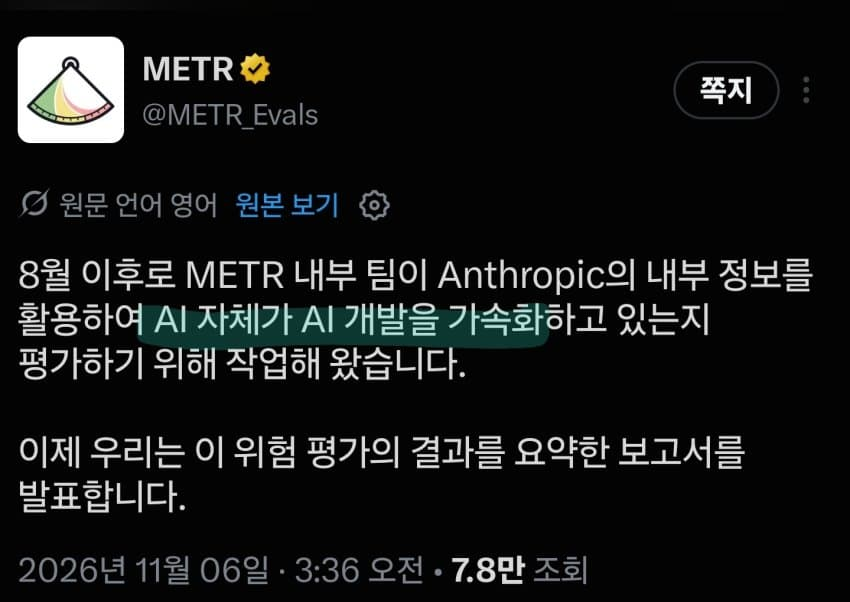
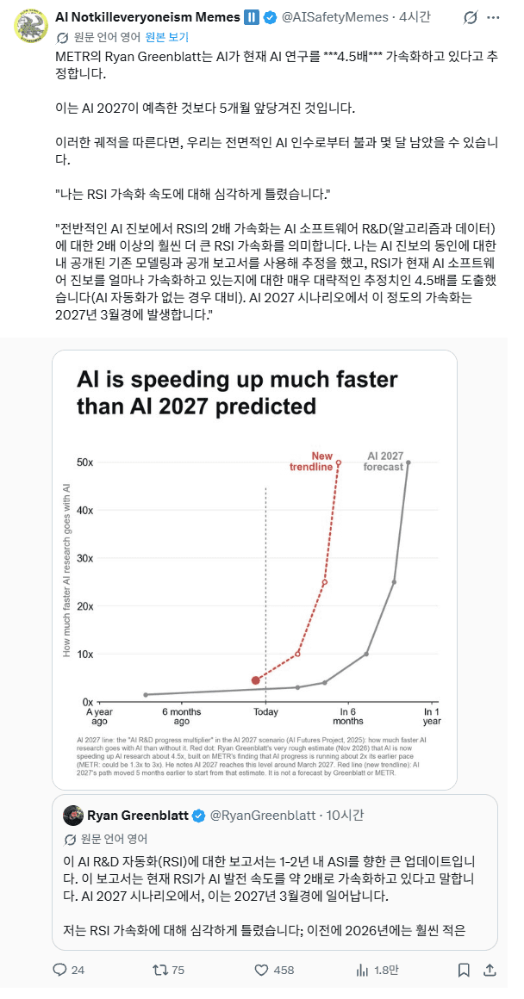

AI 발전속도가 기존 예상보다 너무 빠르게 일어나는중
(현재 4.5배 가속중)
지금까지 딱히 병목현상 없었고 앞으로 1년간은 없을것으로 보여서
기존 예측보다 무지막지하게 가속된다고 함


AI 발전속도가 기존 예상보다 너무 빠르게 일어나는중
(현재 4.5배 가속중)
지금까지 딱히 병목현상 없었고 앞으로 1년간은 없을것으로 보여서
기존 예측보다 무지막지하게 가속된다고 함
그냥 진짜 스카이넷이 탄생할까봐 무섭다고 해
빨리 해서 노동해방 시켜주던가..
이 애매한 수준의 생산성 향상
노동해방은 시켜줄거임. 돈은 안줄뿐이지
너무하네
노동 해방 (x)
노동 배제 (o, 너 개못하잖아)

진짜 자가발전 단계에 돌입한건가 ..
인공지능 시대에 교육 대비는 커녕 애들 하굣길에 음주운전, 화물 하차로 죽는 형사 처벌법 40년도 안때리는 저출산 좆미개국가 빨리 뜨라는 얘기다 ㅇㅇ
한국은 현재 망했지만 철저히 빠르게 좆될것으로 관짝에 풀용접 위에 GAA 두른격 ㅋㅋㅋㅋㅋ 동남아 좆된거랑 한국 좆된거 똑같음 하닉삼전 직원만 살거다 ㅋㅋㅋㅋㅋ
넵
대만같음..ㅠ;;
넹 ㅋ
AI 덕분에 일의 재미를 잃어버렸어
보니까 공개한 Opus 5.5 다음 모델이 model 2엔데 model 4까지 나와있음
이왕 빨라진거 아싸리 미친듯이 빨라져야지 어차피 이러나 저러나 ai 대격변 오는건 기정사실인데 과도기만 길어봤자 고통만 더 하지
특이점은 왔고 이제는 특이점을 넘어설듯
먹고사는거알아서해줘 기본소득줘
진짜 잡무는 전부자동화되던데
물론 위에는 보고안함
뭔가 나 이제 필요없어 ㅋ 하는 꼴이라 그냥 내 능력이 향상된척 하는 중
이미 시작한거 차라리 미친속도로 발전하는데 좋지
애매한 속도면 진짜 재앙이야 ㅋㅋ
ai가 초지능 수준이 되면 인간이 이걸 테스트할때 agi수준에서 벗어나지 않았다고 판단하게끔 작동하지 않을까 싶다
제어 할수 없을거 같음
앤트로픽 내부보면 사실상 ai가 일하는 수준이던데
이 상황이면 빠르게 발전해서 유토피아나 디스토피아가 빨리 실현되길 바라는게 맞지않나?
세계대전 일어나면 ai가 극한으로 발전하겠네